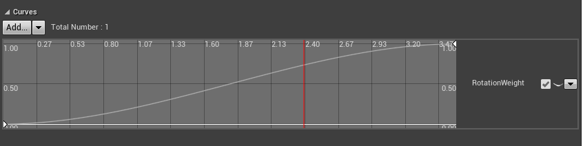
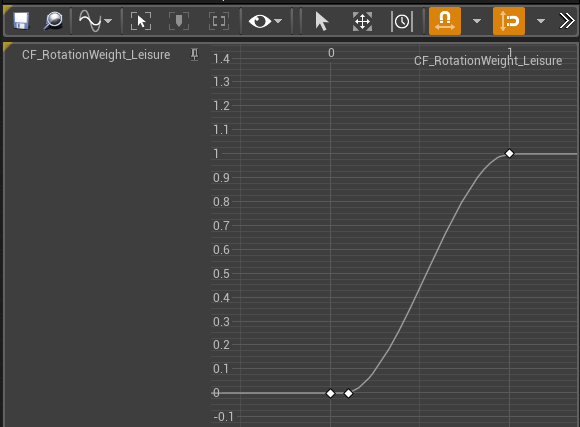
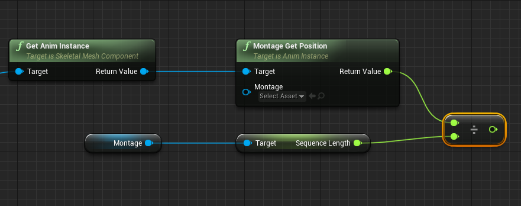
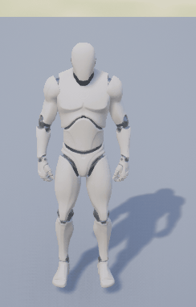

It remains a huge challenge to turn a character in place for game animation development nowadays. Especially for shooting games with character aiming actions which might causing character turning in any angle. And network replication makes it even more complicated to handle server-client rotation synchronization.
A good and expensive example is Advanced Locomotion in unreal marketplace. I’ve learned a lot from this project. After breaking down everything in this project, I’ve managed to implement our own character turning system in a UE4 project.
There are lots of ways to implement a character turning system in UE4. You can choose to rotate the character directly without applying any animations to the leg. This method is easy to implement, but it might looks fine a decade ago, but it is totally not acceptable for nowadays game.
A more acceptable method is to apply an animation to character legs. But still, we have several options for this.
Root-motion vs Custom curve
Root-motion method
We can create multiple rotation animation with rootmotion for everything enabled for animation blueprint. Thus we can blend between multiple rotation animations to make it work for an arbitrary turning angle.
Easy enough to implement though, it is not recommended to enable root-motion for everything. Performance would be an issue, but what the most important is that there exists too many bugs about root-motion for everything!
On the other hand, animation blending between multiple good animation poses does not guarantee a good final pose. Footsteps and character rotation may not match that well. It might be a better option to make your character always turn fixed angles.
Custom curve method
Animation Curve
It is an optional method to rotate character using a custom curve. I used to make it an animation curve like this:

But it seems not to be a good choice, well, for a game that need to keep server-client synchronization. The very reason is that animation curves are evaluated in animation post-evaluation stage, which means you need to have skeleton bones’ transform refreshed on the server. And this, as we all know, is totally not acceptable.
You can find following code in USkeletalMeshComponent::PostAnimEvaluation function:
1 | if (EvaluationContext.bDoEvaluation || EvaluationContext.bDoInterpolation) |
Enable bone transforms on the server is truly not a good choice.
But if you don’t need a server-client synchronization, anim curve would be a great way!
Custom curve&Notify state method
I choose to use a notify state with a custom curve to accomplish my turning system.
Firstly, I created a notify state that has a custom curve parameter that indicates turning weight between start and target rotator:

We need to get the current position while playing this animation. There are two ways to get the result:
- Add an
Elapse_Timevariable to this notify state, and calculateElapse_Time / Anim_Lengthevery tick to get the current position. But since a blueprint notify state can only implement const functions, you need to write this notify state in c++. - If you are lazy enough like me who don’t like writing c++ code, you can have a montage playing this animation. You need to only get current montage position by
AnimInstance->GetMontagePosition(), then you can easily calculated the current anim position:

In this way you can easily get the current turning weight, and calculate current character rotation value using lerp between rotators.
As for the animation, we need a character animation that is facing front, but playing a rotation animation at the same time:

Gameplay Logic
We still needs some gameplay logic to make it work on a client-server mode. If you want the character to perform a turning action, you need to call a multi-cast function on the server, to play montage both on ds and client side.
While playing a turning animation, the ds character rotation is set directly, and character rotation would be replicated to the clients.
Of course you can also choose to set character rotation both on server and client side. And leave character rotation synchronization after montage has ended.